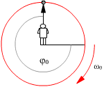
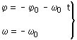
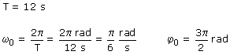
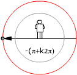
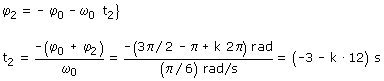
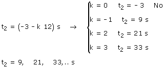

Posición inicial: 0º 90º
b)
Ecuaciones del movimiento:


Parámetros:

Observa que φ0 se toma en el mismo sentido que ω0
Aplicación:
Datos: φ2 = (-π + k·2π) rad , Incógnita: t2



La solución negativa indica que en la vuelta k = 0 no pasa por la posición -180º (Porque el movimiento empieza en la posición -270º)